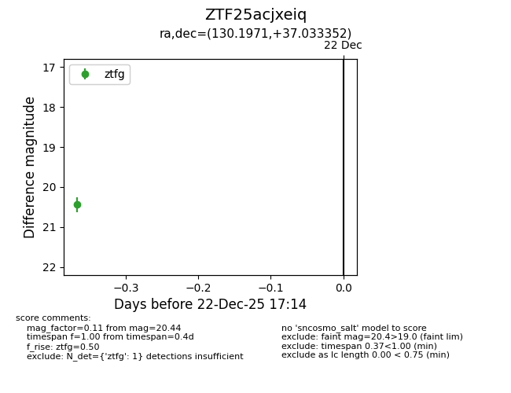
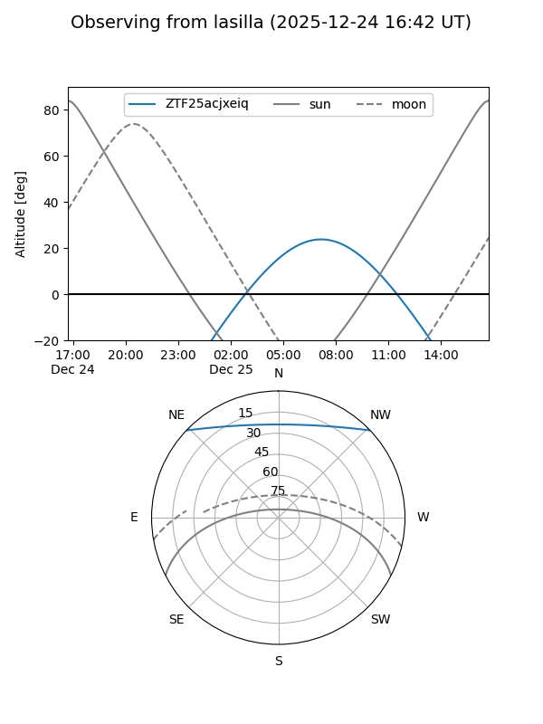
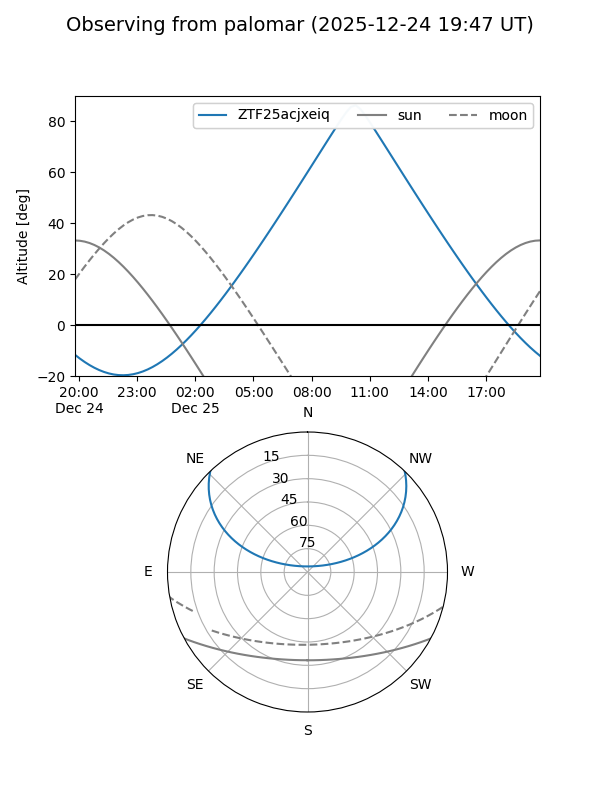

ZTF25acjxeiq
Target ZTF25acjxeiq at 2025-12-22 18:31
Aliases and brokers:
FINK: fink-portal.org/ZTF25acjxeiq
Lasair: lasair-ztf.lsst.ac.uk/objects/ZTF25acjxeiq
ALeRCE: alerce.online/object/ZTF25acjxeiq
alt names
ZTF25acjxeiq (ztf,fink_ztf)
Coordinates:
equatorial (ra, dec) = 130.1971,+37.03335
equatorial (HMS+DMS) = 08:40:47.29,+37:02:00.07
galactic (l, b) = (185.4504,+36.93423)
Flags:
Photometry:
last ztfg=20.44, ztfr=20.27
1 ztfg, 1 ztfr detections
Lightcurve

Visibility


Additional plots